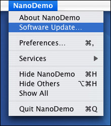
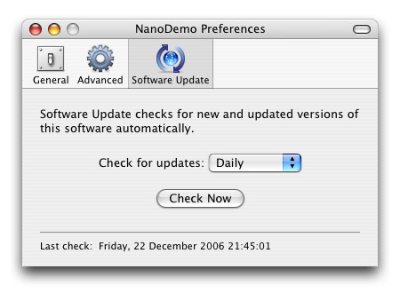

|
Adding Software UpdateNano provides an advanced Software Update mechanism that allows users to view release notes, download updates, and upgrade their software - all from within the currently-running application. 
This is achieved through NSoftwareUpdate, an instance of which is contained within NApplication. AppCastingNSoftwareUpdate is built on AppCasting, where an RSS feed is used to document a list of software releases. The feed URL is embedded within your application, and NSoftwareUpdate fetches this URL to identify the available updates. An RSS feed is a simple XML text file, that can be created with any text editor or a dedicated tool such as Feeder. Since AppCasting feeds are standard RSS documents, users can also subscribe to this feed to be notified of updates in their web browser or RSS reader (for example). An example feed is: The Nano extensions to the AppCasting spec are marked in red. Each extension is an element within an <item> element, prefixed with the appCast: namespace. • appCast:updateInfo contains the URL for the release notes, which are displayed with WebKit. • appCast:updateVersion contains the version number for the update. • appCast:selfInstall indicates if the update should be installed by the running application. If false, or not present, the enclosure URL will be passed to the default web browser. • appCast:enclosureMD5 contains an MD5 checksum for the download. Each item element must contain an enclosure element, which contains the URL for the download. If the feed is also intended for end users, additional tags can be included to describe each update. Supporting Software UpdateOnce an RSS feed has been prepared, you must add Software Update support to your application. This is done by adding a new key to your Info.plist:
<key>SUFeedURL</key>
<string>http://www.mynewsoftware.com/html/su_feed.xml</string> If your Info.plist is pre-processed, the "//" within your URL must be written as "//" to ensure it is not interpreted as a comment. Checking for UpdatesAt a minimum, your user interface should allow the user to invoke Software Update on demand. This can be done with a menu item, or button, that dispatches kCmdSoftwareUpdateCheckNow ('supd'). When NApplication receives this command, it invokes Software Update. The recommended appearance for this command is:

This matches the Apple menu, where "Software Update…" immediately follows the About item. Automatic ChecksNApplication can also check for updates automatically. This feature is enabled when the SUCheckEnabled preference key is true, and SUCheckInterval set to a time in seconds between each check. These keys, and commands that request NApplication to set the interval to typical values, can be found in NSoftwareUpdate.h. Both manual and automatic checks can be incorporated into a preference pane, using a combination of pop-up and push buttons:

Since NApplication can handle commands from the pop-up and push buttons, the only code provided by your application is to update the status text with the date held in the SULastCheckedKey preference. User ExperienceNano's Software Update system is designed to be unobtrusive to normal operation. Automatic checks will not raise the network connection unnecessarily, and downloads are performed asynchronously to avoid blocking the main thread during startup. Identifying UpdatesUpdates are identified by comparing the appCast:updateVersion field feed to the current application's kCFBundleVersionKey. RSS feeds can contain multiple items, and so a "smart" version compare (which knows that 1.0a3 < 1.0b2 < 1.0) is used to identify the most up-to-date item in the feed. Notifying the UserOnce an update has been detected, the user can choose to skip this version entirely, take no action, or install the update. Release notes are displayed with WebKit, and can be localized through the Accept-Language HTTP header or by localizing the SUFeedURL key. The appCast:updateInfo URL can also contain a single '%s', which will be sprintf'd with the current application version. If the feed is returned through a CGI script, this value could be used to dynamically generate release notes that are appropriate for the user's upgrade path. Downloading UpdatesIf appCast:selfInstall is true, NSoftwareUpdate will download the update and validate the MD5 checksum. Downloads are performed with NClientHTTP, Nano's built-in "HTTP client" class. This uses CFNetwork for high-performance downloads, and constructs a standard user agent string that will be present in your web server logs:
My Great App/1.5 (Mac OS 10.4.9; 2333Mhz; 1024Mb; x86)
By default this user agent string does not include any personal or identifying information, but instead includes some useful attributes that can be used to collect usage statistics. Installing UpdatesNSoftwareUpdate expects updates to be packaged in the standard .dmg format, and silently mounts disk images to avoid cluttering the user's desktop. Disk images may contain background images or additional folders, and would normally be the same .dmg created for web-based downloads. The new copy of the application is found by searching the disk image for an application with the same bundle identifier. This allows updates to be placed anywhere on the volume, or even to change name between releases (e.g., if the application name contains the version number). Once the new application has been identified, it will be copied to the folder containing the existing copy of the application (authenticating the user as necessary). The existing application is then moved to the trash, and sent a kHICommandQuit. Once the existing application has exited, the new application is launched. |
| Copyright © 2006-2007 refNum Software | |